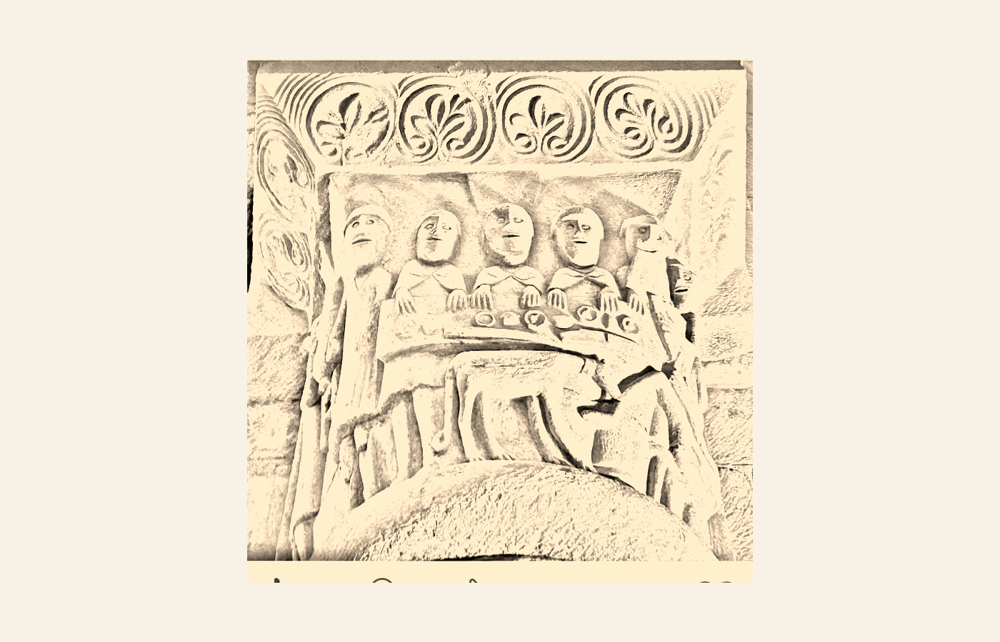
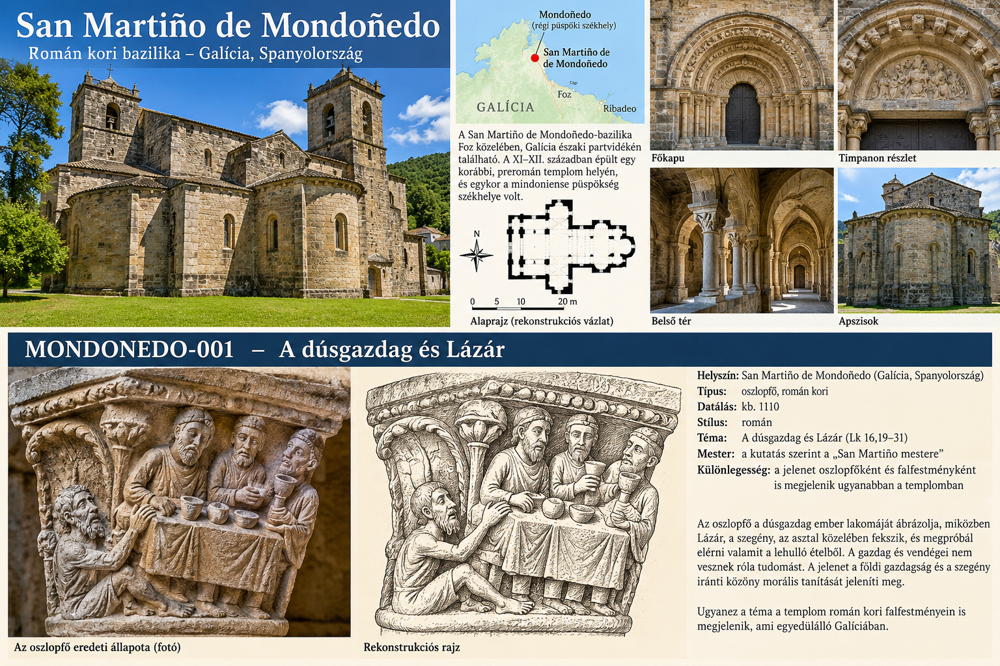

Biztos
Amit dokumentálni tudunk
XI–XII. századi templom egy korábbi épület helyén; egykori püspöki székhely; jelenetes oszlopfők és román kori falképek; MONDONEDO-001 bibliai témája; történeti zarándokkapcsolat.
5. feltöltés · Mondoñedo
Foz · Galícia · Spanyolország
Egykori püspöki székhely, román kori bazilika, jelenetes oszlopfők, korai falfestmények és ma is élő helyi hagyományok.

Vizuális térkép
A nagykép segít összekapcsolni a templomot, a földrajzi helyet és a MONDONEDO-001 faragványt. A részletes szöveg ezután bontja ki a rétegeket.

Történet
A mai San Martiño de Mondoñedo-bazilika Foz közelében áll, Galícia északi partvidékén. A jelenlegi templom fő tömege a XI–XII. században épült egy korábbi, preromán templom helyén, és egykor a mindoniense püspökség székhelye volt.
A püspökség előzménye a VI. századi Bretoña központjához kapcsolódott; a püspöki szék a IX. század végén San Martiño de Mondoñedóban szerveződött újjá, és a XII. század elejéig itt maradt.
A templom bazilikális alaprajzú, három hajóval, kereszthajóval és három félköríves apszissal. Belsejében jelenetes oszlopfők, kőoltár és XII. századi falfestmények maradtak fenn. A falfestmények stiláris kapcsolatait a kutatás a poitou-i festészettel is összefüggésbe hozza, valószínűleg Santiago de Compostela közvetítő szerepével.
Etimológia
A középkori forrásokban a név több alakban jelenik meg: Mindunietum, Mindonieto, Mendonnedo, Mondonnedo. A mai forma hosszú hang- és alakváltozás eredménye.
Különösen érdekes, hogy a név maga is „elköltözött”. Eredetileg a mai San Martiño de Mondoñedo térségét jelölte. Amikor a püspöki központ beljebb került, az új székhely — a korábbi Valibria — idővel szintén a Mondoñedo nevet kapta.
Az újabb galíciai toponímiai kutatás a nevet preromán eredetűnek tartja. A MIND- elemet egy nagyon régi, indoeurópai eredetű, „hegy, emelkedés” jelentésű gyökkel hozzák kapcsolatba. Ez az eredeti San Martiño-i helyszín földrajzával jobban összeegyeztethető, mint a mai Mondoñedo város völgyi fekvésével.
Egyes kutatók a baszk mendi („hegy”) szóval is párhuzamot vontak. Ez nem feltétlenül közvetlen kölcsönzést jelent, inkább egy nagyon régi, preromán nyelvi réteg lehetséges nyomát.
Korábban a Mondoñedo nevet a Monte Dumiensis kifejezésből is próbálták levezetni, San Martiño de Dumióval kapcsolatba hozva. Az újabb galíciai toponímiai szakirodalom ezt inkább népetimológiai magyarázatnak tekinti. A honlapon ezt is megőrizzük, mert a projektben minden dokumentálható elméletet feltüntetünk, a bizonyosság fokának jelzésével.
Szent és legenda
A templom történetének egyik központi alakja Gonzalo püspök, akinek püspökségét a kutatás nagyjából 1071–1112 közé helyezi. A helyi hagyomány szentként tiszteli, és a bazilikában hozzá kapcsolt püspöki tárgyakat is őriznek.
A helyi hagyomány szerint Gonzalo imádságával mentette meg a környéket egy normann támadástól. Egy magaslatról imádkozott, miközben a támadó hajók közeledtek; vihar támadt, és a flotta elpusztult vagy visszafordult. A történethez kapcsolódik a Capela do Bispo Santo. Ezt a honlapon élő helyi legendaként, nem bizonyított történeti eseményként kezeljük.
A bazilika közelében található Fonte da Zapata hagyománya szintén Gonzalo püspökhöz kapcsolódik. A legenda szerint a püspök cipője vagy papucsa nyomán fakadt fel a víz; a forrást a helyi emlékezet gyógyító, csodatévő erővel ruházta fel.
Zarándoklat
San Martiño de Mondoñedo történeti zarándokkapcsolata dokumentálható. Kora újkori források két, innen induló utat is Camiño Francés néven említenek, és a Bispo Santo-kápolnához Asturias felől érkező, Santiago de Compostelába tartó zarándokokról is maradt fenn adat.
Itt tehát a Camino nem utólagos turisztikai kapcsolat, hanem a templom környezetének történeti zarándokvilágához tartozik.
Katalógustétel
A faragvány a dúsgazdag lakomáját mutatja, miközben Lázár, a szegény, az asztal közelében próbál elérni valamit a lehulló ételből. A jelenet morális feszültségét a bőség és a közöny, illetve a közvetlen közelben lévő nyomor ellentéte adja.
A kutatás a faragványt körülbelül 1110-re datálja, és egy elkülönített „San Martiño mestere” köréhez kapcsolja. Különösen figyelemre méltó, hogy ugyanez a téma a templom román kori falfestményein is megjelenik.
Élő hagyomány
Szent Gonzalo kultusza ma is része a helyi közösségi emlékezetnek. A Festa do Bispo Santo ünnepet májusban tartják; a helyi hagyomány zarándoklattal és közösségi ünneppel kapcsolódik a szent püspökhöz.
A Festa Normanda pedig dramatikus formában idézi fel a normann támadás és Gonzalo püspök legendáját. Így a középkori történet nem pusztán könyvben él tovább, hanem mai helyi ünnepben is.
Biztos
XI–XII. századi templom egy korábbi épület helyén; egykori püspöki székhely; jelenetes oszlopfők és román kori falképek; MONDONEDO-001 bibliai témája; történeti zarándokkapcsolat.
Hagyomány
Gonzalo püspök imája és a normann flotta pusztulása; a Fonte da Zapata csodás keletkezése és gyógyító ereje.
Nyitott
A legkorábbi építési fázisok; az oszlopfők teljes ikonográfiai rendszere; a Lázár-faragvány és a falfestmény kapcsolata; a középkori zarándokutak pontos nyomvonala.
Források
Tanulóprojekt. A honlap szeretetből és kíváncsiságból készül. A biztos adatot, a helyi hagyományt, az alternatív elméleteket és a nyitott kérdéseket külön jelöljük.
A projektről